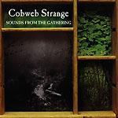

| Artist: | Cobweb Strange |
| Title: | Sounds From The Gathering |
| Label: | Genterine Records CPR-1002 |
| Length(s): | 49 minutes |
| Year(s) of release: | 1998 |
| Month of review: | [09/2003] |
| 1) | Taste Of Ash | 2.44 |
| 3) | I'd Give Everything | 4.25 |
| 4) | Thirteen | 6.54 |
| 5) | The Color Of | 6.17 |
| 6) | ...As The Sky Crumbles | 3.57 |
Sometimes The Shine is a rather different track, far more laid back, and a bit more challenging. Unfortunately the vocal parts remain dominated by Summerlin's vocals. Also, the sections are more stuck than glued together, making an awkward impression. The drawn out instrumental section displays several guitar approaches to the tracks theme. Pretty nice, really, although one might contest that the theme is pushed to its full extent.
I'd Give Everything is shorter, but like its predecessor based on a guitar riff. I find it hard to determine whether its the same or a new theme, and can't help finding something's amiss here. Still, apart from the continueing flat sound and meager vocals, it sounds okay, although more sketchy or demo like, than truely progressive.
The lingering vocals give Thirteen a mesmerizing feel. The added depth of drumming in this track has positive effects too, until a repetition of the phrase "don't take me out" irritates a tad. As this dies down, the mesmer returns.
The Color Of is sung slightly different, rather low and more steady, creating a semblance with The Church. Niceish
...As The Sky Crumbles is a shortish rocky track.
Solitude & The Hollow Promise starts off gently and calmly, but as it progresses it starts to haste along until its mid section brings it to calmer waters. Strummy guitars dominate, but are at times pushed to the back by stronger guitar sounds.
A Cup To Catch The Silence is a slow instrumental track, fitting in with the works of the former Japan members. Nice stuff.